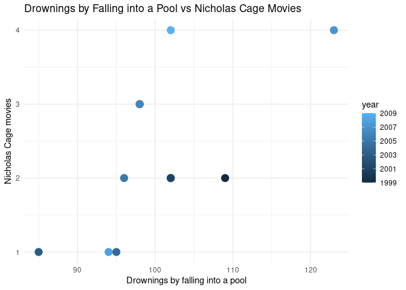
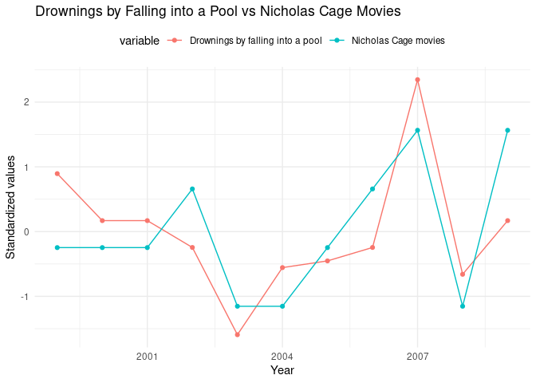

The goal of spuriouscorrelations is to keep alive the amazing examples from Tyler Vigen. Unfortunately, as of 2023-10-09, the website is down as my students noticed. Therefore, I decided to use the snapshot from the Internet Wayback Machine to save the datasets from 2023-06-07.
You can install the development version of spuriouscorrelations like so:
remotes::install_github("pachadotdev/spuriouscorrelations")This is a basic example which shows you how to plot a spurious correlation:
library(dplyr)
#>
#> Attaching package: 'dplyr'
#> The following objects are masked from 'package:stats':
#>
#> filter, lag
#> The following objects are masked from 'package:base':
#>
#> intersect, setdiff, setequal, union
library(ggplot2)
library(spuriouscorrelations)
unique(spurious_correlations$var2_short)
#> [1] US spending on science Nicholas Cage
#> [3] Cheese consumed Age of Miss America
#> [5] Arcade revenue Space launches
#> [7] Mozzarella cheese consumption Kentucky marriages
#> [9] US crude oil imports from Norway Chicken consumption
#> [11] Nuclear power plants Japanese cars sold
#> [13] Spelling bee letters Uranium stored
#> 14 Levels: Age of Miss America Arcade revenue ... US spending on science
nicholas_cage <- spurious_correlations %>%
filter(var2_short == "Nicholas Cage")
ggplot(nicholas_cage) +
geom_point(aes(x = var1_value, y = var2_value, color = year), size = 4) +
theme_minimal() +
labs(
x = "Drownings by falling into a pool",
y = "Nicholas Cage movies",
title = "Drownings by Falling into a Pool vs Nicholas Cage Movies"
)
The correlation is:
cor(nicholas_cage$var1_value, nicholas_cage$var2_value)
#> [1] 0.6660043Now let’s make it double-axis:
library(tidyr)
nicholas_cage_long <- nicholas_cage %>%
select(year, var1_value, var2_value) %>%
pivot_longer(
cols = c(var1_value, var2_value),
names_to = "variable",
values_to = "value"
) %>%
# standardize the values
group_by(variable) %>%
mutate(
value = (value - mean(value)) / sd(value),
variable = case_when(
variable == "var1_value" ~ "Drownings by falling into a pool",
variable == "var2_value" ~ "Nicholas Cage movies"
)
)
# make a double y axis plot with year on the x axis
ggplot(nicholas_cage_long, aes(
x = year, y = value, color = variable,
group = variable
)) +
geom_line() +
geom_point() +
theme_minimal() +
theme(legend.position = "top") +
labs(
x = "Year",
y = "Standardized values",
title = "Drownings by Falling into a Pool vs Nicholas Cage Movies"
)